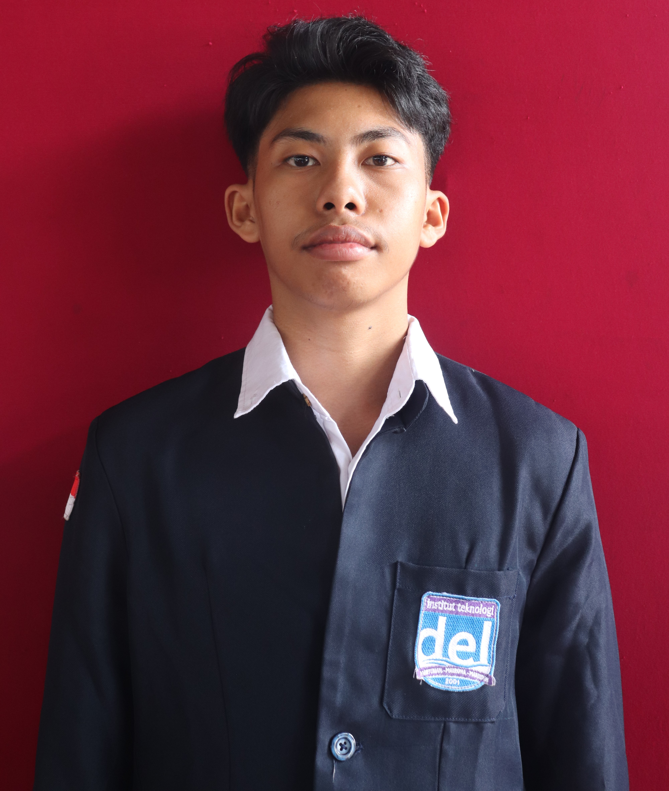

Rafael Nobel Hutapea
Mahasiswa S1 Informatika & Pengembang Backend
Ringkasan
Mahasiswa S1 Informatika di Institut Teknologi Del dengan IPK 3.45, berspesialisasi dalam pengembangan backend, arsitektur basis data, dan desain UI/UX. Menunjukkan keahlian teknis dalam Java, Spring Boot, SQL, dan pipeline CI/CD melalui proyek akademik end-to-end dan kompetisi teknologi nasional seperti Gemastik XVIII dan PKM 2026. Menggabungkan dasar rekayasa perangkat lunak yang kuat dengan pengalaman kepemimpinan sebagai Ketua Tim untuk inisiatif kesehatan digital. Terus mengembangkan kemampuan teknis dengan sertifikasi IBM SkillsBuild terbaru.
Pendidikan
Institut Teknologi Del
S1 Informatika
Sitoluama, IDN Agt 2024 - Sep 2028 (Perkiraan)
IPK: 3.45 / 4.00
Mata Kuliah Relevan: Pemrograman Berorientasi Objek & Rekayasa Perangkat Lunak, Pemrograman Fungsional, Pemrograman Prosedural, Desain Basis Data, Desain UI/UX, Algoritma dan Struktur Data.
Keahlian
Keahlian Teknis
Keahlian Interpersonal
Pelatihan & Sertifikasi
-
Pengenalan ke LLM
IBM SkillsBuild x Hacktiv8 (Mei 2026 – Jun 2026)
-
Intelligent by Design: Membangun Agen AI
IBM SkillsBuild x Hacktiv8 (Mei 2026 – Jun 2026)
-
Pengenalan ke TI
IBM SkillsBuild x Codecademy (Mei 2026 – Jun 2026)
-
Pengenalan ke Cloud Computing
IBM SkillsBuild (Jun 2026)
Proyek & Pengalaman
Battle Code - Proyek Algoritma & Struktur Data
Apr 2026 - Mei 2026
Merancang dan mengembangkan soal Dynamic Programming berjudul 'Ways to Climb' untuk proyek Circle Battle, termasuk 10 tingkat kasus uji (test cases), templat kode Java, dokumentasi README yang komprehensif, dan workflow GitHub Actions untuk pengujian otomatis.
Ketua Tim - Proposal PKM-PM (HEMOSMART)
Mar 2026 - Mei 2026
Memimpin pengembangan end-to-end "HEMOSMART", proposal sistem pakar berbasis Android untuk deteksi dini anemia guna mencegah stunting, termasuk membangun kemitraan strategis.
Sistem Web & Backend End to End (Proyek PBO)
Okt 2025 - Des 2025
Merancang Antarmuka Pengguna (UI) dan mengembangkan sistem backend end-to-end menggunakan Java, Spring Boot, dan JPA, serta mengelola pipeline CI/CD melalui GitHub.
Ketua Tim - Gemastik XVIII (AquaGuard Smart City)
Jun 2025 - Okt 2025
Lolos sebagai delegasi universitas untuk kategori Smart City dengan mengembangkan "AquaGuard Smart City", sebuah solusi manajemen risiko banjir terintegrasi dengan dasbor peringatan dini.
Konsep Smart City (WCHL 2025)
Mei 2025 - Jul 2025
Merumuskan konsep dan memodelkan kerangka kerja Smart City universal yang terintegrasi dengan platform kesehatan masyarakat terdesentralisasi.
Pengalaman Organisasi
Majelis Permusyawaratan Mahasiswa (MPM) IT DEL
Mar 2026 - SekarangKomisi B – Keuangan dan Logistik
- Berperan aktif dalam badan legislatif mahasiswa untuk mengadvokasi aspirasi dan merumuskan kebijakan tingkat kampus.
- Mengembangkan ide program kerja strategis beserta rencana implementasinya.
- Menyusun draf komitmen organisasi dan memastikan efektivitas operasional komisi.
Paduan Suara Mahasiswa – Mateo Choir
Nov 2024 - SekarangTenor
- Berpartisipasi aktif dalam latihan rutin dan sesi pengembangan musik institusi.
- Berkolaborasi secara efektif dalam ansambel vokal untuk mencapai harmonisasi yang tepat, menunjukkan disiplin dan kerja sama tim.
Himpunan Mahasiswa Sarjana Terapan Informatika (HIMASTI)
Mar 2026 - SekarangAnggota Aktif
- Berperan aktif sebagai anggota HIMASTI di Institut Teknologi Del, berkontribusi pada acara departemen dan kolaborasi antarmahasiswa.